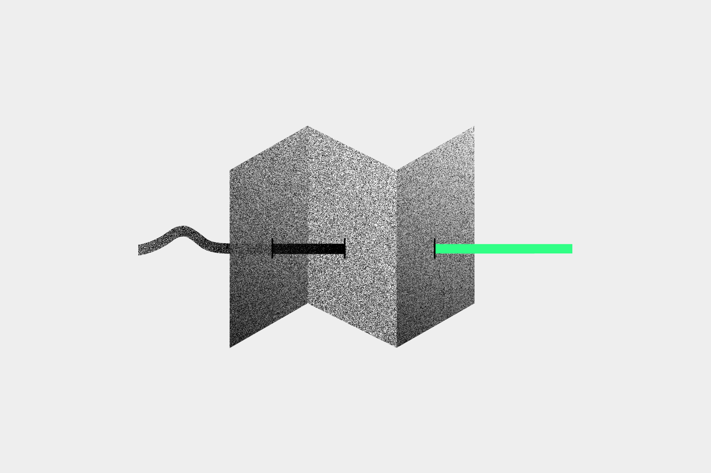
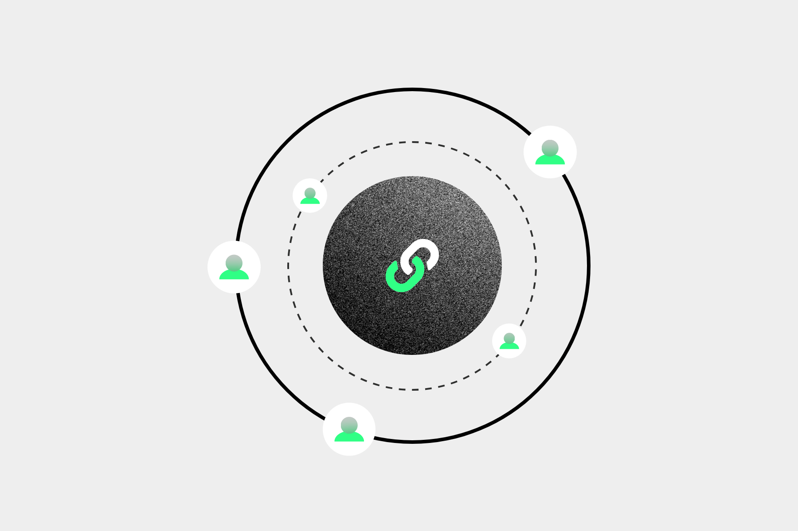

B2B doesn't have to mean boring-to-boring. In fact, in the competitive B2B landscape, being different might be your brand’s biggest advantage. Behind every company logo, there are real people with real lives. People who laugh at commercials, watch the Super Bowl, and unwind with their favorite shows after a long day. Even when you're dealing with complex products or services selling to other businesses, you're still connecting with those same people.
They crave authenticity, a good story, and a sense that you understand their world. Your website is your chance to lift the corporate mask and show them who you really are, while, of course, keeping it professional. These 7 tips will help you break free from the overplayed corporate narratives and build a B2B website experience that's engaging, relatable, and refreshingly human.
Yes, case studies are important, and testimonials provide valuable social proof. However, traditional formats can sometimes feel a bit predictable and may not capture the full essence of your brand's impact. To engage your audience and make a memorable impression, you can explore more innovative approaches to talk about your successes. Here are some creative ideas to shake things up a bit:
It's easy to fall into the trap of industry jargon, especially when you're passionate about what you do. We get excited about the technical details, the innovative features, and the complex solutions we offer. Overloading your website visitors with technical terms and complex concepts can get confusing and ultimately drive them away. Instead, strive for clarity and simplicity in your messaging.

Letting your website visitors ‘peek’ behind-the-scenes conveys a friendly, approachable image. Highlighting your team and their work will help you add that personal touch, making your business more relatable. Here’s some inspiration for weaving in some company culture into your site’s team page:
B2B websites don’t have to be static and one-dimensional. Interactive elements can transform your website from a passive information source into an engaging experience. By encouraging active participation, with on-brand content, you can create a more memorable and impactful impression on your visitors.
More and more people are using their phones to browse the web, research products, and make shopping decisions. If your website isn't optimized for these smaller screens, you risk frustrating your audience and losing valuable business opportunities.

You might have heard that content marketing is a powerful tool for attracting and warming up your target audience. This is especially true for B2B companies with longer sales cycles that rely on mutual trust. Your website is a resource center, a hub of knowledge that your audience can rely on to solve their problems and achieve their goals.
Your B2B website is a dynamic platform that evolves and adapts over time. To ensure your website remains effective, you need to embrace a mindset of continuous improvement, always seeking ways to optimize its performance and tailor the user experience to your audience.
Your B2B website can be more than just a collection of pages and general information about what your company does. With the right brand strategy in place, your website has a powerful potential to connect with your audience, showcase your team and expertise while building trust, and driving business growth. Embracing a more human, engaging approach, and letting in some creative ideas will help you build a website experience that truly stands out from the crowd. Ready to break the mold and build a B2B website that actually connects with your audience? Let's talk!